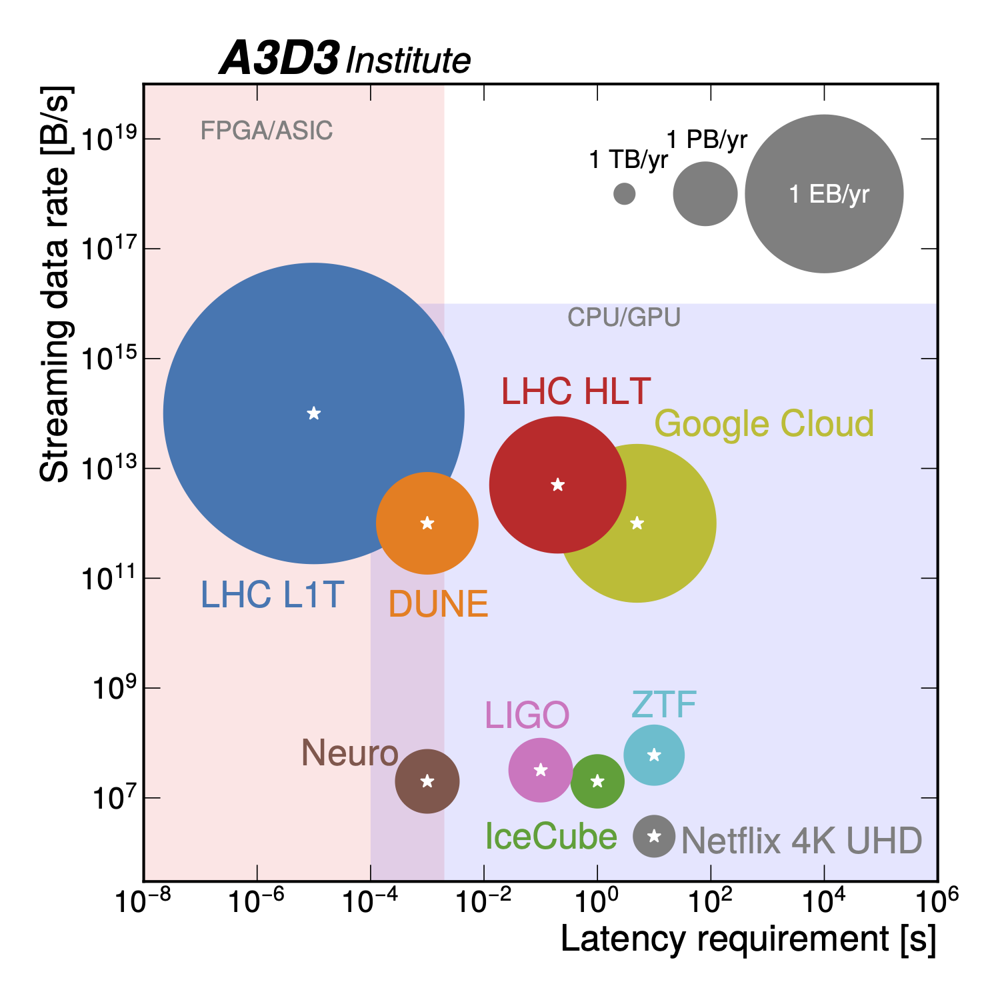
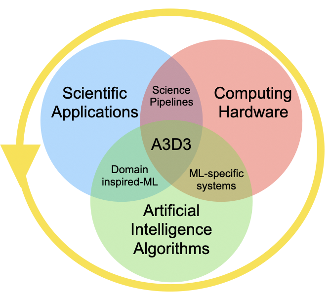

About
The National Science Foundation (NSF), under the Harnessing the Data Revolution (HDR) program, is providing funding to establish the Accelerated AI Algorithms for Data-Driven Discovery (A3D3) Institute, a multi-disciplinary and geographically distributed entity with the primary mission to lead a paradigm shift in the application of real-time artificial intelligence (AI) at scale to advance scientific knowledge and accelerate discovery. The Institute team reflects a collaborative effort of Principal Investigators from Caltech, Duke University, MIT, Purdue University, UC San Diego, University of Illinois at Urbana-Champaign, University of Minnesota, University of Washington, and University of Wisconsin-Madison.
As scientific data sets become progressively larger, algorithms to process this data quickly become more complex. In response, AI has emerged as a solution to efficiently analyze these massive data sets. Emerging processor technologies, such as graphics processing units (GPUs) and field-programmable gate arrays (FPGAs), allow AI algorithms to be greatly accelerated. The combination of AI and these processors is leading to a revolution in the way we analyze data, minimizing the time needed to perform the most advanced of analyses, and allowing us to address the challenges brought about by the omnipresent onslaught of data. To harness these new developments and leverage them for the advancement of science, the newly-created $15 million NSF HDR Institute of Accelerated AI Algorithms for Data-Driven Discovery (A3D3) aims to incorporate AI algorithms with new processors such that they can analyze the unprecedented data sets we face.
To take full advantage of fast AI, A3D3 targets fundamental problems in three fields of science: high energy physics, multi-messenger astrophysics, and systems neuroscience. A3D3 works closely within these domains to develop customized AI solutions to process large datasets in real-time, significantly enhancing their discovery potential. The ultimate goal of A3D3 is to construct the institutional knowledge essential for real-time applications of AI in any scientific field. A3D3 will empower scientists with new tools to deal with the coming data deluge through dedicated outreach efforts.
